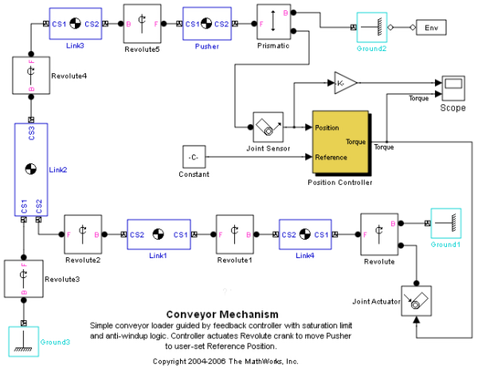

搬送モデルの線形化 (SimMechanics が必要)
目次
このデモでは、SimMechanics™ モデルの線形化と共に、操作点の検索とスナップショット機能の使用法を紹介します(SimMechanics が必要)。
操作条件の検索
モデルを開きます。
open_system('scdmechconveyor');
 定常状態の操作点は、操作仕様オブジェクトを使用して検索できます。このオブジェクトは、シミュレートされた操作点を使用して初期化されたものです。定常状態の操作点を検索する場合、SimMechanics マシンの解析タイプをトリミング モードに設定しなければなりません。この機能の詳細は、SimMechanics ドキュメンテーションを参照してください。
set_param('scdmechconveyor/Mechanical Environment','AnalysisType','Trimming') opspec = operspec('scdmechconveyor');
SimMechanics モデルでは、操作条件検索が非線形最小二乗アルゴリズムを使用してより迅速に定常状態条件に収束する場合もあります。このアルゴリズムは、Optimization Toolbox™ のライセンスがある場合に使用できます。検索の反復レポートは、LINOPTIONS コマンドを使用して表示することもできます。
opt = linoptions('OptimizerType','lsqnonlin','DisplayReport','none'); opt.OptimizationOptions.MaxFunEvals = 2000;
SimMechanics モデルの代数的な制約が満たされていることを確認するには、トリム出力端子をゼロに指定しなければなりません。
opspec.Outputs.y = zeros(8,1); opspec.Outputs.Known = ones(8,1);
定常状態の操作点は、FINDOP コマンドを使用して検索できます。
[op,opreport] = findop('scdmechconveyor',opspec,opt);
最終レポートを表示します。
opreport
Operating Report for the Model scdmechconveyor.
(Time-Varying Components Evaluated at time t=0)
Operating point specifications were successfully met.
States:
----------
(1.) scdmechconveyor/Position Controller/H_inf Controller
x: -1.08 dx: 0 (0)
x: -7.64e-012 dx: -1.14e-012 (0)
x: 0.199 dx: -9.4e-014 (0)
x: 0.199 dx: -7.27e-015 (0)
x: 0.0743 dx: 1.43e-013 (0)
(2.) scdmechconveyor/Position Controller/Loopshaping Weight
x: 2.59e-007 dx: 3.9e-014 (0)
x: 2.59e-007 dx: 4.2e-015 (0)
x: 9.66e-008 dx: -3.84e-014 (0)
(3.) scdmechconveyor/Position Controller/Prefilter
x: 0.0103 dx: 2.44e-013 (0)
(4.) scdmechconveyor/Position Controller/inv(W)
x: -2.59e-007 dx: -3.9e-014 (0)
x: -2.59e-007 dx: -4.2e-015 (0)
x: -9.66e-008 dx: 1.07e-013 (0)
(5.) Prismatic.P1.Position
x: 0.103 dx: 2.15e-021 (0)
(6.) Prismatic.P1.Velocity
x: 2.15e-021 dx: 5.03e-013 (0)
(7.) Revolute.R1.Position
x: -0.881 dx: 1.01e-021 (0)
(8.) Revolute.R1.Velocity
x: 1.01e-021 dx: -4.17e-012 (0)
(9.) Revolute1.R1.Position
x: 0.83 dx: 4.27e-021 (0)
(10.) Revolute1.R1.Velocity
x: 4.27e-021 dx: 3.76e-012 (0)
(11.) Revolute3.R1.Position
x: -0.172 dx: -7.02e-021 (0)
(12.) Revolute3.R1.Velocity
x: -7.02e-021 dx: -8.07e-013 (0)
(13.) Revolute5.R1.Position
x: 0.00175 dx: -5.01e-022 (0)
(14.) Revolute5.R1.Velocity
x: -5.01e-022 dx: -1.05e-013 (0)
Inputs: None
----------
Outputs:
----------
(1.) scdmechconveyor/MSB Trimming Out
y: -2.31e-013 (0)
y: 1.41e-013 (0)
y: -9.13e-013 (0)
y: 1.62e-013 (0)
y: 2.15e-021 (0)
y: -1.66e-022 (0)
y: -1.39e-021 (0)
y: -2.17e-021 (0)
モデルの線形化を完了する前に、SimMechanics モデルの解析タイプを元に戻す必要があります。
set_param('scdmechconveyor/Mechanical Environment','AnalysisType','Forward dynamics')
モデルの線形化
このモデルでは、搬送位置とトルク指令間の開ループ プラント モデルを、次の入力と出力を使用して検索できます。
io(1) = linio('scdmechconveyor/Joint Sensor',1,'out','on'); io(2) = linio('scdmechconveyor/Position Controller',1,'in');
モデルを線形化します。
sys = linearize('scdmechconveyor',op,io);
線形化されたモデルと対応するボード線図を表示します。
sysm = zpk(sys) bodemag(sysm)
Zero/pole/gain from input "Torque" to output "Joint Sensor":
-2.0818
-------------------
(s-3.481) (s+3.481)

モデルを閉じます。
bdclose('scdmechconveyor')